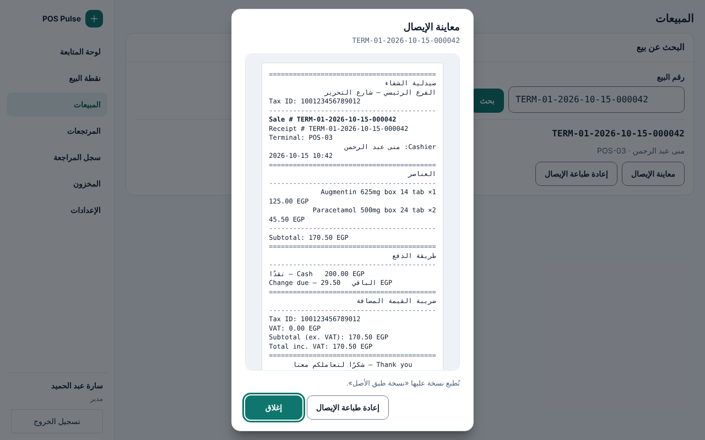
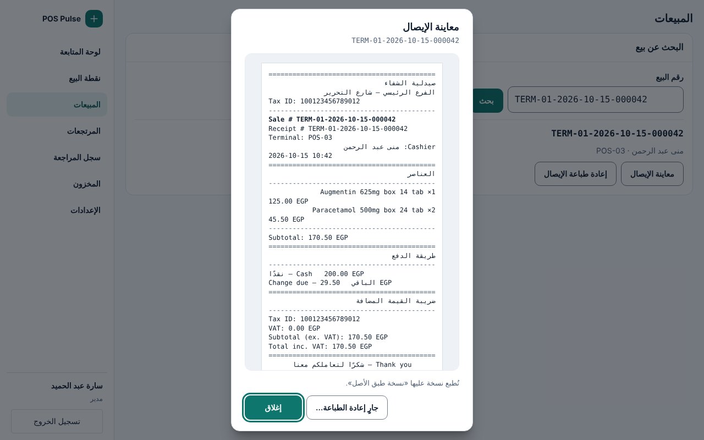
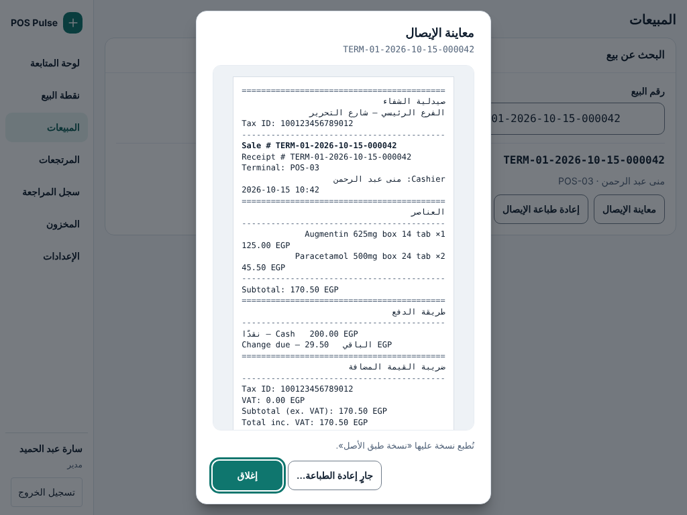
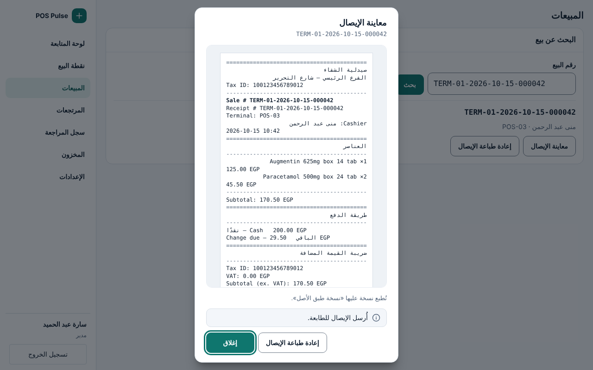
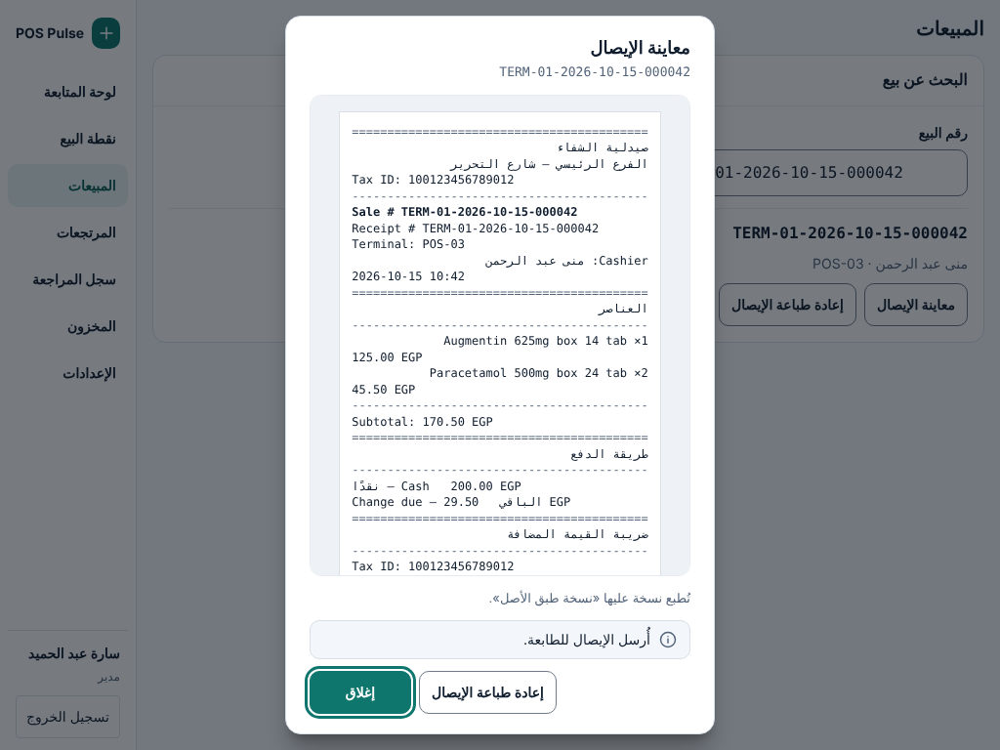
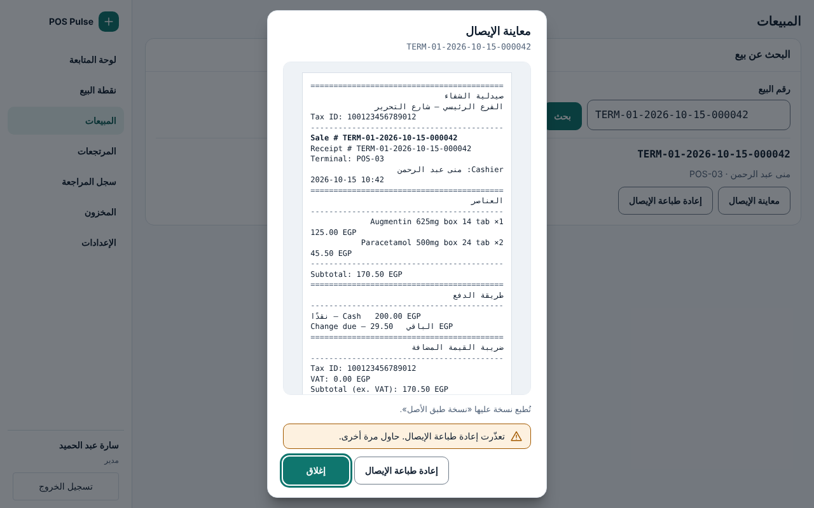
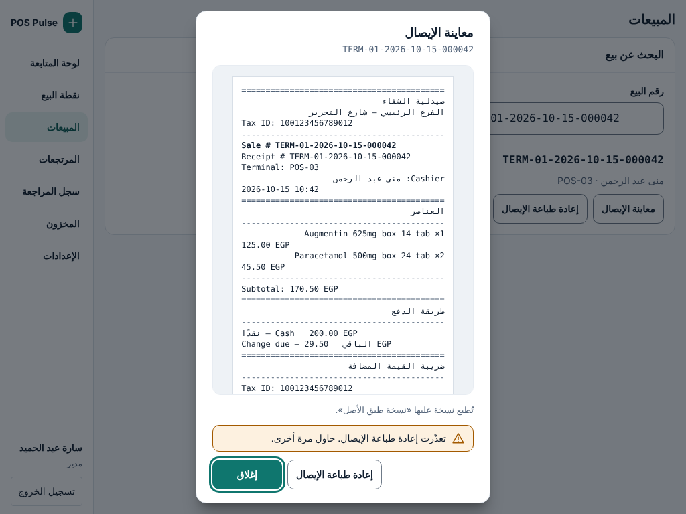
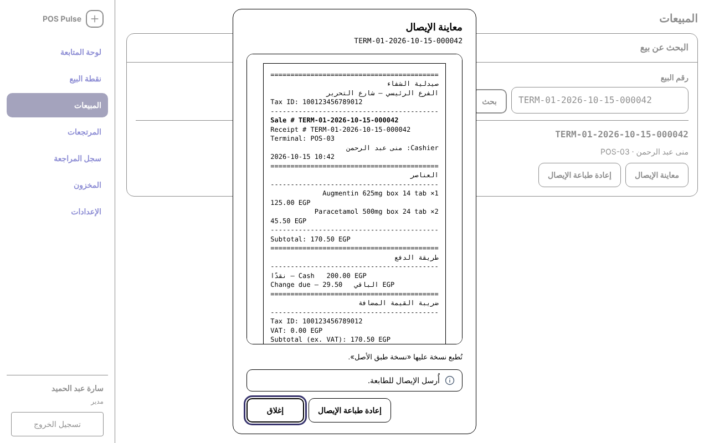

معاينة الإيصال في «المبيعات»: ملحق G-6 (نافذة V5)
مسودة · بانتظار قرار المالك · Jira RT-659 · ملحق لـ G-6 (RT-478، PR #670)
المطلوب من المالك: اعتماد الشكل، واختيار (أ) أو (ب) لزر «طباعة». لا تغيير في محتوى الإيصال، ولا في ناقل الطباعة، ولا في صلاحيات البيع، ولا في main.
«طباعة»: خياران للمالك
| الخيار | ما يتغيّر | ما لا يتغيّر | الحالات المرسومة |
|---|---|---|---|
| (أ) حذف الزر | النافذة للمعاينة فقط: «إغلاق» وحده. إعادة الطباعة تبقى في سطر النتيجة كما هي. | كل سلوك الطباعة. | A-Ready (والتحميل والتعذّر) |
| (ب) ربطه بمسار إعادة الطباعة | يظهر في النافذة نفس عنصر ReprintAffordance: نفس النداء ونفس الشرط ونفس النصوص. يغيب بلا طباعة ناجحة فتبدو النافذة مثل (أ). تبقى النافذة مفتوحة بعد النتيجة. |
النداء، والصلاحيات (main)، والشرط، والمحتوى المطبوع، والناقل. لا نداء جديد ولا تغيير في الجسر. | B-Ready، B-Reprinting، B-Sent، B-Failed (والتحميل والتعذّر) |
(ب) ممكن اليوم بلا تغيير في main. ثمنه زر إعادة طباعة ثانٍ لنفس البيع (في السطر وفي النافذة)، ونسخة مطبوعة تختلف عن المعروضة بعلامة «نسخة طبق الأصل»، لذا التلميح.
التوصية: (أ). المعاينة قراءة فقط، والإجراء موجود بجانبها بنفس الشرط، فلا يتكرر الزر ولا تُطبع ورقة تختلف عمّا يُعرض. القرار للمالك.
مسار إعادة الطباعة الموجود (main@87238bc)
| أين | ما وُجد | |
|---|---|---|
| المسار | receipts.reprint → main/ipc/receipts.ts → receipts-bridge.ts reprint() | الواجهة تستعمله اليوم من ReprintAffordance.tsx بجانب «معاينة الإيصال» في نتيجة البحث وفي تفاصيل البيع المحلي (SaleResult). كل نقرة مفتاح idempotency جديد؛ نداء واحد في كل مرة. |
| من يحق له | sale-access-policy.ts (RT-546، OD-534-2) | يُفحص في main: الكاشير يعيد طباعة بيعه فقط، والمدير والمسؤول أي بيع في نطاق الجهاز. غير ذلك يُرفض sale_not_found بلا تسريب. تنقّل الكاشير يعرض «نقطة البيع» وحدها (OD-6)، فيصل إلى «المبيعات» المدير والمسؤول عمليًا. |
| الشرط | reprintPrecondition | لا إعادة طباعة قبل طباعة ناجحة (not_yet_printed)، ولا لبيع ملغى (sale_voided، يُطبع من سجل المتجر). في الواجهة يغيب الزر بلا طباعة ناجحة (latest_print_event.outcome === 'success')، لا يُعطَّل. |
| ما يُطبع | reprint_duplicate | نسخة عليها «نسخة طبق الأصل / DUPLICATE COPY» ورقمها. لا يُفتح الدُّرج (FR-030). النتيجة ذات وجهين: ok أو رفض printer_unavailable. |
| ما تعرضه المعاينة | receipts.preview | قراءة فقط بنسخة preview (محتوى الطباعة الأولى بلا علامة). لا طباعة ولا أثر جانبي. |
الحالات (7 حالة × 1024×768 و1280×800)









لكل حالة ملفان G6P-<State>-1024.html و-1280.html، والصور في captures/ (فاتح وتباين عالٍ لكل عرض).



ما رُسم وما التزم به
- نافذة V5 واحدة (
v5/foundation/Dialog.tsx):aria-modal، الشاشة خلفها inert، Esc يغلق، والتركيز يعود إلى «معاينة الإيصال». - التركيز الأول على «إغلاق»: العنصر الآمن (DESIGN.md). الترتيب بـ Tab: الإيصال (منطقة قابلة للتمرير،
tabindex=0) ← (ب) «إعادة طباعة الإيصال» ← «إغلاق». - حُذف: زر ✕ المكرر، و«زر التكبير»، و«طباعة» المعطّل دائمًا. الإيصال بعرض 80 مم: 42 عمودًا بخط ثابت 12 بكسل، وهو الحد الأدنى، فلا حاجة للتكبير (اليوم 0.7rem ≈ 11 بكسل).
- الإيصال كما يخرج من المحرّك (
tools/slip-preview.html، نسخةpreviewمنtemplate-engine.tsعلى main@87238bc ببيانات عيّنة). لا تغيير في المحتوى أو الشكل. - الإيصال على حامل غائر (surface-sunken) ويُمرَّر وحده؛ العنوان والأزرار ثابتة في 1024×768 و1280×800.
- الشاشة خلف النافذة هي حالة G-6 «SalesFound» نفسها من
gen_g6.py.
النصوص
| المكان | النص | الأساس | الحالة |
|---|---|---|---|
| عنوان النافذة | «معاينة الإيصال» | ReceiptPreview.tsx وSALES_COPY.preview | مأخوذ من main |
| تحت العنوان | رقم البيع بخط ثابت (TERM-01-…) | sale.sale_number، موجود في SaleResult | مقترح |
| التحميل | «جارٍ التحضير» | ReceiptPreview.tsx | مأخوذ من main |
| تعذّر المعاينة | «تعذّرت معاينة الإيصال» | ReceiptPreview.tsx (role=alert) | مأخوذ من main |
| زر الإغلاق | «إغلاق» | ReceiptPreview.tsx؛ يُحذف زر ✕ المكرر | مأخوذ من main |
| (ب) زر الطباعة | «إعادة طباعة الإيصال» / «جارٍ إعادة الطباعة…» | SALES_COPY.reprint وreprinting. لا «طباعة»: المسار يطبع نسخة مكررة لا الإيصال الأول | مأخوذ من main |
| (ب) تلميح | «تُطبع نسخة عليها «نسخة طبق الأصل».» | علامة reprint_duplicate في template-engine.ts؛ المعاينة تعرض preview بلا العلامة | مقترح |
| (ب) أُرسل | «أُرسل الإيصال للطابعة.» (محايد، لا «طُبع») | SALES_COPY.reprintSent (N-09) | مأخوذ من main |
| (ب) تعذّر | «تعذّرت إعادة طباعة الإيصال. حاول مرة أخرى.» | SALES_COPY.reprintFailed | مأخوذ من main |
التباين العالي
- حد النافذة والحامل والإيصال بلون النص؛ حلقة التركيز
Highlight؛ الزر المعطّلGrayText(أنماط G-6). - المعنى لا يعتمد على اللون: الإشعارات برمزها ونصها.
الفحوص المنفّذة على الملفات
أُنتجت الصور وفُحصت بـtools/capture_g6p.cjs (أداة ../tools/capture-refs.cjs المشتركة، نفس فحوص G-6 وPK-3): الاحتواء داخل الإطار،
لا نص أصغر من 12 بكسل، لا هدف أصغر من 44×44، لا عنصر قابل للتركيز خلف النافذة، وaxe-core بلا مخالفات. تُولَّد الملفات من
tools/gen_g6p.py وهذه الصفحة من tools/gen_g6p_spec.py.